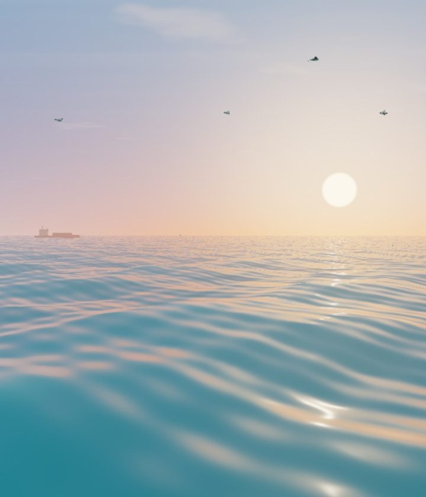
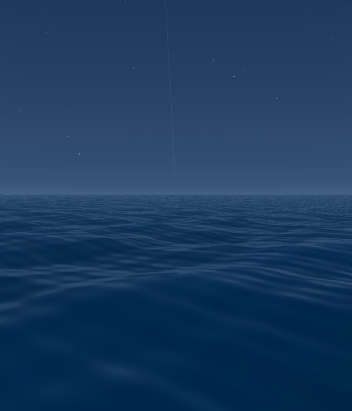

Ideas, brought
to life.
Applied AI product work, collected in a clear, readable logbook.

Rae
Enterprise AI shaped around how people work.
Read the story →Applied AI product work, collected in a clear, readable logbook.

Enterprise AI shaped around how people work.
Read the story →A dark instrument cabinet for projects, reef discoveries and dive readings.

The places and creatures from your visit.
View the dive →Ocean blue fills the interface; large type leads directly into the world.
The anchor, the treasure and the wreck.
Find a story →